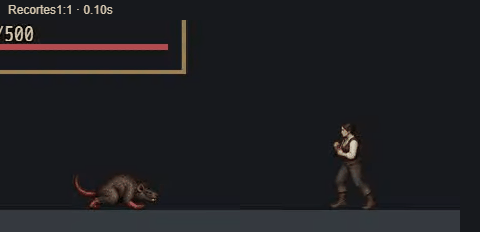
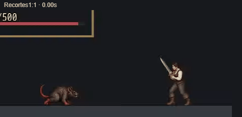

Arena · revisão M01-10 R02
Gravações do canvas real816×624 em Chrome desktop. Somente Bretã feminina e rato revisados;15 personagens/2 inimigos continuam R01. Avaliação estética/manual do responsável adiada. HP500, variância0 e RNG0,5 são fixtures isoladas, não balanceamento do jogo.
Vídeos completos preservam campo/UI. GIFs abaixo são recortes1:1 decodificados desses vídeos, com timestamps externos. Redimensionar a janela pode reduzir a apresentação; abrir o vídeo em tamanho original para inspeção de pixels.
Comparação rápida · antes / depois
R01 · gesto genérico

R02 · espada pesada

Baseline R01 · leve e pesada
Adaga · leve
Adaga · pesada
Espada · leve
Espada · pesada
Desarmado · leve
Desarmado · pesada
Conjuração
Poção
Derrota do rato · retorno ao mapa
Derrota da jogadora · game over